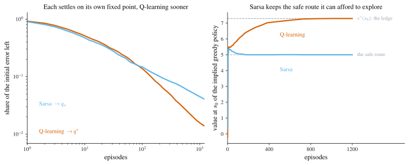

3 Temporal Difference Learning, Sarsa, and Q-learning
\[ \newcommand{\E}{\mathbb{E}} \newcommand{\R}{\mathbb{R}} \newcommand{\Prob}{\mathbb{P}} \newcommand{\BR}{\operatorname{BR}} \newcommand{\eps}{\varepsilon} \newcommand{\given}{\,\vert\,} \newcommand{\argmax}{\operatorname*{arg\,max}} \newcommand{\argmin}{\operatorname*{arg\,min}} \newcommand{\sm}{\setminus} \newcommand{\defeq}{\equiv} \]
Monte Carlo was the first model-free method. Temporal difference (TD) learning is the second, and it improves on Monte Carlo along the one axis Chapter 2 could not: it does not wait. Where MC Basic must run an episode to its end before it learns anything, TD updates after every single transition. This chapter builds that idea three times over, for state values, for action values under a fixed policy (Sarsa), and for optimal action values directly (Q-learning), and then removes the assumption that has been quietly holding since Chapter 1, that values can be stored in a table.
Ben Moll’s RL lecture slides, Lecture 3.
3.1 Incremental versus episodic learning
The distinction is worth naming precisely, because it is the whole difference between this chapter and the last.
Chapter 2’s policy evaluation step was Equation 2.7, the average return over \(N\) episodes. Written as a running average in the manner of Equation 2.8, the \(j\)-th update is
\[ q_{\pi_{k}}^{j+1}(s,a)=q_{\pi_{k}}^{j}(s,a)+\frac{1}{j}\left[\sum_{t=0}^{T}\gamma^{t}r(s_{t}^{j},a_{t}^{j})-q_{\pi_{k}}^{j}(s,a)\right]. \tag{3.1}\]
The bracket contains a whole episode’s realized return, so nothing can be updated until \(t\) has run from \(0\) to \(T\). This chapter instead develops algorithms of the form
\[ q_{t+1}(s_{t},a_{t})=q_{t}(s_{t},a_{t})+\alpha_{t}\times(\text{something available at time } t), \tag{3.2}\]
where \(q_{t}\) is the time-\(t\) estimate of \(q_{\pi_{k}}\).
Definition 3.1 (Incremental and episodic learning) An algorithm is incremental if it updates in real time, at every transition, as in Equation 3.2. It is episodic (or non-incremental) if it must wait for an episode to finish, as in Equation 3.1.
Sutton and Barto call this same distinction online versus offline. That vocabulary is best avoided here, because “offline RL” has since come to mean something else entirely: learning from a fixed, previously collected dataset with no further interaction. Incremental and episodic are unambiguous.
The distinction outlives the tabular setting. The second half of this chapter writes updates to a parameter vector \(w\) rather than to a table, and the same question applies: does \(w\) move at every step, or only at the end of an episode? Chapter 4 will find both, with REINFORCE episodic and actor-critic incremental.
3.2 TD learning of state values
Start with the easier problem: estimate \(v_{\pi}\) for a fixed policy \(\pi\), with no improvement step. Write \(v_{t}(s)\) for the time-\(t\) estimate of \(v_{\pi}(s)\).
Given experience \(\{(s_{t},r_{t+1},s_{t+1})\}_{t}\) generated by following \(\pi\), at each \(t=0,1,2,\dots\)
\[ v_{t+1}(s_{t})=v_{t}(s_{t})+\alpha_{t}(s_{t})\big[\,r_{t+1}+\gamma v_{t}(s_{t+1})-v_{t}(s_{t})\,\big], \tag{3.3}\]
\[ v_{t+1}(s)=v_{t}(s)\qquad\text{for all } s\neq s_{t}. \tag{3.4}\]
Equation 3.4 says only the state just visited is touched; every other entry of the table is left alone. It is usually left implicit, but it matters: TD learning is a local update, and the fact that visiting one state teaches you nothing about any other is exactly the weakness that function approximation will fix at the end of this chapter.
Annotating Equation 3.3 names its parts:
\[ \underbrace{v_{t+1}(s_{t})}_{\text{new estimate}} =\underbrace{v_{t}(s_{t})}_{\text{current estimate}} +\alpha_{t}(s_{t})\Big[\underbrace{\overbrace{r_{t+1}+\gamma v_{t}(s_{t+1})}^{\text{TD target }\bar{v}_{t}}-v_{t}(s_{t})}_{\text{TD error }\delta_{t}}\Big]. \tag{3.5}\]
Definition 3.2 (TD target and TD error) \[ \bar{v}_{t}\defeq r_{t+1}+\gamma v_{t}(s_{t+1}), \qquad \delta_{t}\defeq \bar{v}_{t}-v_{t}(s_{t}). \]
This is Equation 1.3 from Chapter 1, now with the names attached and the learning rate allowed to depend on the state.
Why \(\bar{v}_{t}\) deserves the name “target”
Because the algorithm provably moves \(v(s_{t})\) toward it.
Rewrite Equation 3.3 in terms of \(\bar{v}_{t}\) and subtract \(\bar{v}_{t}\) from both sides: \[ \begin{aligned} v_{t+1}(s_{t})&=v_{t}(s_{t})+\alpha_{t}(s_{t})\big[\bar{v}_{t}-v_{t}(s_{t})\big]\\ \implies\quad v_{t+1}(s_{t})-\bar{v}_{t}&=v_{t}(s_{t})-\bar{v}_{t}+\alpha_{t}(s_{t})\big[\bar{v}_{t}-v_{t}(s_{t})\big]\\ \implies\quad v_{t+1}(s_{t})-\bar{v}_{t}&=\big[1-\alpha_{t}(s_{t})\big]\big[v_{t}(s_{t})-\bar{v}_{t}\big]\\ \implies\quad \big|v_{t+1}(s_{t})-\bar{v}_{t}\big|&=\big|1-\alpha_{t}(s_{t})\big|\,\big|v_{t}(s_{t})-\bar{v}_{t}\big| . \end{aligned} \] By the standing assumption \(\alpha_{t}(s_{t})\in(0,1)\) we have \(0<1-\alpha_{t}(s_{t})<1\), and therefore \[ \big|v_{t+1}(s_{t})-\bar{v}_{t}\big|\leq\big|v_{t}(s_{t})-\bar{v}_{t}\big| . \]
Each update never increases the distance to \(\bar{v}_{t}\), and strictly shrinks it whenever \(v_{t}(s_{t})\neq\bar{v}_{t}\). (The assumption \(\alpha_{t}<1\) is doing real work: at \(\alpha_{t}>2\) the factor \(|1-\alpha_{t}|\) exceeds one and the gap would grow.) The target moves, because it is built from \(v_{t}\) itself, but at every instant the estimate is being pulled toward it.
Convergence
Theorem 3.1 (Convergence of TD learning) Assume \(\gamma\in(0,1)\), that \(\mathcal{S}\) is finite, that rewards are bounded, and that \(\alpha_{t}(s)\in(0,1)\) for every \(t\) and \(s\). Then under the TD algorithm Equation 3.3, \(v_{t}(s)\) converges with probability 1 to \(v_{\pi}(s)\) for all \(s\in\mathcal{S}\) as \(t\to\infty\), provided \[ \sum_{t}\alpha_{t}(s)=\infty \qquad\text{and}\qquad \sum_{t}\alpha_{t}^{2}(s)<\infty \qquad\text{for all } s\in\mathcal{S}. \]
These are the Robbins-Monro conditions of Theorem 2.1, now required to hold state by state, and that qualifier carries the content.
Proving it needs a variant of Theorem 2.2, not a generalization of it. The variant handles many variables at once, one per state, and it trades the zero-mean noise requirement for a weaker one, that the bias be bounded by the current error; in exchange it adds the requirement \(\E[\beta_{k}]\leq\E[\alpha_{k}]\), which the Chapter 2 form does not impose. Neither theorem contains the other, and the Robbins-Monro corollary in Chapter 2 uses the Chapter 2 form. Bootstrapping guarantees the latter: the TD target is built from \(v_{t}\), so it is biased by exactly as much as \(v_{t}\) is wrong.
Theorem 3.2 (Dvoretzky, multi-variable form) Let \(\mathcal{S}\) be a finite index set. For the stochastic process \[ \Delta_{k+1}(s)=\big(1-\alpha_{k}(s)\big)\Delta_{k}(s)+\beta_{k}(s)\eta_{k}(s), \tag{3.6}\] \(\Delta_{k}(s)\) converges to zero almost surely for every \(s\in\mathcal{S}\) provided that, for every \(s\in\mathcal{S}\),
- \(\sum_{k}\alpha_{k}(s)=\infty\), \(\sum_{k}\alpha_{k}^{2}(s)<\infty\), \(\sum_{k}\beta_{k}^{2}(s)<\infty\), and \(\E[\beta_{k}(s)\given\mathcal{H}_{k}]\leq\E[\alpha_{k}(s)\given\mathcal{H}_{k}]\), uniformly almost surely;
- \(\big\|\E[\eta_{k}(s)\given\mathcal{H}_{k}]\big\|_{\infty}\leq\gamma\|\Delta_{k}\|_{\infty}\) for some \(\gamma\in(0,1)\);
- \(\operatorname{var}[\eta_{k}(s)\given\mathcal{H}_{k}]\leq C\big(1+\|\Delta_{k}\|_{\infty}\big)^{2}\) for a constant \(C\),
where \(\|x(s)\|_{\infty}\defeq\max_{s\in\mathcal{S}}|x(s)|\) is the maximum over the index set.
Condition 2 is the one that matters. Theorem 2.2 demanded unbiased noise; here the bias may be nonzero but must be a strict contraction of the current error, shrinking it by a factor \(\gamma<1\). In the proof below, \(\gamma\) turns out to be the discount factor, which is why discounting is not a modelling convenience here but the thing that makes bootstrapping converge at all.
Fix an arbitrary state \(s\in\mathcal{S}\) and define the estimation error \[ \Delta_{t}(s)\defeq v_{t}(s)-v_{\pi}(s). \]
Step 1: put the algorithm in the form Equation 3.6. When \(s=s_{t}\), subtract \(v_{\pi}(s)\) from both sides of Equation 3.3: \[ \Delta_{t+1}(s)=\big(1-\alpha_{t}(s)\big)\Delta_{t}(s)+\alpha_{t}(s)\underbrace{\big[r_{t+1}+\gamma v_{t}(s_{t+1})-v_{\pi}(s)\big]}_{\eta_{t}(s)} . \] When \(s\neq s_{t}\), Equation 3.4 gives \(\Delta_{t+1}(s)=\Delta_{t}(s)\), which is the same expression with \(\alpha_{t}(s)=0\) and \(\eta_{t}(s)=0\). So regardless of which state was visited, \[ \Delta_{t+1}(s)=\big(1-\alpha_{t}(s)\big)\Delta_{t}(s)+\alpha_{t}(s)\eta_{t}(s), \] which is Equation 3.6 with \(\beta_{t}(s)=\alpha_{t}(s)\), so the requirement \(\E[\beta_{t}]\leq\E[\alpha_{t}]\) holds with equality.
Step 2: condition 1. This is precisely the hypothesis of Theorem 3.1.
Step 3: condition 2, the contraction. Everything here stays conditional on \(\mathcal{H}_{t}\). That matters: \(\eta_{t}(s)\) contains \(v_{t}\), which is a function of the whole past trajectory and so is emphatically history-dependent. What the Markov property gives is narrower and is all we need. Conditioning on \(\mathcal{H}_{t}\) fixes both the table \(v_{t}\) and the current state \(s_{t}\), so the only randomness left in \(\eta_{t}(s)\) is the pair \((r_{t+1},s_{t+1})\), whose law depends on \(s_{t}\) alone. For \(s\neq s_{t}\) we have \(\eta_{t}(s)=0\) and the bound is trivial. For \(s=s_{t}\), \[ \E[\eta_{t}(s)\given\mathcal{H}_{t}]=\E\big[r_{t+1}+\gamma v_{t}(s_{t+1})\given\mathcal{H}_{t}\big]-v_{\pi}(s_{t}). \] Now use the Bellman equation for \(v_{\pi}\), which says \(v_{\pi}(s_{t})=\E[r_{t+1}+\gamma v_{\pi}(s_{t+1})\given s_{t}]\). Subtracting, the reward terms cancel exactly and only the value gap survives: \[ \E[\eta_{t}(s)\given\mathcal{H}_{t}]=\gamma\,\E\big[v_{t}(s_{t+1})-v_{\pi}(s_{t+1})\given\mathcal{H}_{t}\big] =\gamma\sum_{s'\in\mathcal{S}}p(s'\given s_{t})\big[v_{t}(s')-v_{\pi}(s')\big], \] where \(v_{t}\) passes outside the expectation because \(\mathcal{H}_{t}\) determines it. Bound the sum by its largest term, using that \(p(\cdot\given s_{t})\) is a probability distribution and therefore sums to one: \[ \big|\E[\eta_{t}(s)\given\mathcal{H}_{t}]\big| \leq\gamma\sum_{s'}p(s'\given s_{t})\max_{s'}\big|v_{t}(s')-v_{\pi}(s')\big| =\gamma\max_{s'}\big|v_{t}(s')-v_{\pi}(s')\big| =\gamma\|\Delta_{t}\|_{\infty}. \] This holds whether or not \(s=s_{t}\), so \(\|\E[\eta_{t}(s)\given\mathcal{H}_{t}]\|_{\infty}\leq\gamma\|\Delta_{t}\|_{\infty}\), with \(\gamma\in(0,1)\) the discount factor. Note both sides are \(\mathcal{H}_{t}\)-measurable random variables, which is exactly the form condition 2 of Theorem 3.2 asks for.
Step 4: condition 3. For \(s\neq s_{t}\), \(\operatorname{var}[\eta_{t}(s)\given\mathcal{H}_{t}]=0\). For \(s=s_{t}\), the constant \(v_{\pi}(s_{t})\) drops out of the variance, leaving \(\operatorname{var}[r_{t+1}+\gamma v_{t}(s_{t+1})\given s_{t}]\), which is bounded by a constant multiple of \((1+\|\Delta_{t}\|_{\infty})^{2}\) because the reward is bounded and \(v_{t}\) differs from the fixed \(v_{\pi}\) by at most \(\|\Delta_{t}\|_{\infty}\).
All three conditions hold, so Theorem 3.2 gives \(\Delta_{t}(s)\to0\) almost surely for every \(s\). \(\square\)
The proof isolates why bootstrapping is safe. The TD target is not an unbiased estimate of \(v_{\pi}(s_{t})\): it is contaminated by the current error at the next state. But Step 3 shows that contamination enters multiplied by \(\gamma\). Each update therefore replaces the error at \(s_{t}\) with at most \(\gamma\) times the worst error anywhere, and iterating a factor \(\gamma<1\) drives it to zero. Undiscounted problems, \(\gamma=1\), lose exactly this argument.
Recall from Equation 3.4 that \(\alpha_{t}(s)>0\) only when \(s_{t}=s\), and \(\alpha_{t}(s)=0\) otherwise. So:
- \(\sum_{t}\alpha_{t}(s)=\infty\) for every \(s\) can only hold if every state is visited infinitely often. This is not a condition on the step size at all: it is an exploration requirement in disguise, and it is why \(\eps\)-greedy policies from Definition 2.2 reappear the moment we start improving the policy.
- \(\sum_{t}\alpha_{t}^{2}(s)<\infty\) requires \(\alpha_{t}\to0\). In practice \(\alpha\) is usually a small constant, which violates it. As Figure 2.2 showed, the estimate then does not converge to a point but fluctuates around the truth, and one settles for convergence in an expectation sense.
TD against Monte Carlo
Both are model-free; they differ in what they wait for and what they assume.
| TD / Sarsa | Monte Carlo | |
|---|---|---|
| Timing | incremental: updates immediately after each reward | episodic: waits until an episode is complete |
| Task type | handles episodic and continuing tasks | needs terminal states, so episodic tasks only |
| Bootstrapping | yes: the update uses the previous estimate of the same value, so it needs an initial guess | no: estimates values directly from returns, no initial guess needed |
| Variance | low: few random variables per update (Sarsa needs only \(r_{t+1},s_{t+1},a_{t+1}\)) | high: estimating \(q_{\pi}(s_{t},a_{t})\) requires samples of \(r_{t+1}+\gamma r_{t+2}+\gamma^{2}r_{t+3}+\cdots\), and with episodes of length \(L\) there are \(|\mathcal{A}|^{L}\) possible episodes |
3.3 Sarsa: TD learning of action values
TD as stated estimates state values, and Chapter 2 established why that is not enough: turning \(v\) into a decision requires the model. To search for optimal policies we need action values. The fix is entirely mechanical.
Given experience \(\{(s_{t},a_{t},r_{t+1},s_{t+1},a_{t+1})\}_{t}\) generated by following \(\pi\),
\[ q_{t+1}(s_{t},a_{t})=q_{t}(s_{t},a_{t})+\alpha_{t}(s_{t},a_{t})\big[\,r_{t+1}+\gamma q_{t}(s_{t+1},a_{t+1})-q_{t}(s_{t},a_{t})\,\big], \tag{3.7}\]
with \(q_{t+1}(s,a)=q_{t}(s,a)\) for all \((s,a)\neq(s_{t},a_{t})\).
Three questions answer themselves from Equation 3.7.
Why the name? Each update consumes the quintuple \((s_{t},a_{t},r_{t+1},s_{t+1},a_{t+1})\): state, action, reward, state, action. Sarsa.
How does it relate to TD? Replace the state value \(v(s)\) in Equation 3.3 by the action value \(q(s,a)\) and you have Equation 3.7. Sarsa is the TD algorithm, in action-value form.
What does it solve, mathematically? Equation 3.7 is a stochastic approximation algorithm, in the sense of Theorem 2.1, for the equation
\[ q_{\pi}(s,a)=\E\big[R+\gamma q_{\pi}(S',A')\ \given\ s,a\big], \qquad\text{for all } s,a, \tag{3.8}\]
which is the action-value form of the policy-evaluation Bellman equation for the fixed policy \(\pi\): Equation 2.2 with the maximization over \(\pi\) removed.
The claim deserves a proof, because Equation 3.8 does not look like anything in Chapter 2. There is no sum over actions in it, and the policy \(\pi\) appears nowhere. Both are hiding inside the expectation.
Write \(p(r\given s,a)\) for the distribution of the immediate reward and \(p(s'\given s,a)\) for the transition, both conditional on the pair \((s,a)\). Expanding the right-hand side of Equation 3.8 by the definition of expectation,
\[ \E\big[R+\gamma q_{\pi}(S',A')\given s,a\big] =\sum_{r}r\,p(r\given s,a) +\gamma\sum_{s'\in\mathcal{S}}\sum_{a'\in\mathcal{A}}q_{\pi}(s',a')\,p(s',a'\given s,a). \]
Linearity is doing the work in that split: each term is integrated against its own marginal, so nothing needs to be assumed about how \(R\) and \(S'\) are related. The first term is the expected immediate reward, which collapses to \(r(s,a)\) whenever the reward is a deterministic function of the pair, as it was in Chapters 1 and 2. The second term needs the joint law of the next state and the next action, and that is the one object here we have not met before.
Factor the joint. The chain rule is free: \[ p(s',a'\given s,a)=p(s'\given s,a)\,p(a'\given s',s,a). \] The second factor is where the policy enters. The agent produces \(a'\) by drawing from \(\pi(\cdot\given s')\), and \(\pi\) reads the current state and nothing else: not where the agent came from, not what it did to get there. So conditionally on \(s'\), the next action is independent of \((s,a)\), and \[ p(a'\given s',s,a)=p(a'\given s')=\pi(a'\given s'). \] That step is an assumption about the policy, not about the environment, and it is worth being clear about why it is legitimate. The pair \((s,a)\) certainly influences \(a'\), but only by determining which \(s'\) the agent lands in. Conditioning on \(s'\) closes that one channel, and there is no other, because a stationary Markov policy has no memory to route information through. This is the class of policies that has been in force since Definition 2.1. A history-dependent policy would break the step, and would break considerably more than the step: \(q\) would no longer be a function of \((s,a)\) alone, and there would be no table left to fill in.
Substitute and collect. Putting the factorization back and summing over \(a'\) first, \[ q_{\pi}(s,a)=\underbrace{\sum_{r}r\,p(r\given s,a)}_{\E[R\given s,a]} +\gamma\sum_{s'\in\mathcal{S}}p(s'\given s,a)\underbrace{\sum_{a'\in\mathcal{A}}\pi(a'\given s')\,q_{\pi}(s',a')}_{v_{\pi}(s')}, \] because the action value averaged against the policy at \(s'\) is by definition the state value there. Hence \[ q_{\pi}(s,a)=\E[R\given s,a]+\gamma\sum_{s'\in\mathcal{S}}p(s'\given s,a)\,v_{\pi}(s'), \] which is Equation 2.5, the model-based form of the action value.
And back to state values. Average that last display against \(\pi(a\given s)\) and use Definition 2.1: \[ v_{\pi}(s)=\sum_{a\in\mathcal{A}}\pi(a\given s)\,q_{\pi}(s,a) =r_{\pi}(s)+\gamma\sum_{s'\in\mathcal{S}}p_{\pi}(s'\given s)\,v_{\pi}(s'), \] which is Equation 1.6, the policy-evaluation equation, written one state at a time. So Equation 3.8 and the state-value Bellman equation are one equation read at two resolutions: one entry per pair, or one entry per state. \(\square\)
Which is why the quintuple in the name is not an accident. Equation 3.8 sets \(q_{\pi}(s,a)\) equal to the mean of \(R+\gamma q_{\pi}(S',A')\), and the sample \((r_{t+1},s_{t+1},a_{t+1})\) is one draw of exactly those random variables. Sarsa averages the draws incrementally in the manner of Equation 2.8, bootstrapping the current \(q_{t}\) in for the unknown \(q_{\pi}\) inside the target.
Theorem 3.3 (Convergence of Sarsa) Under the same standing assumptions as Theorem 3.1 (\(\gamma\in(0,1)\), finite \(\mathcal{S}\) and \(\mathcal{A}\), bounded rewards, \(\alpha_{t}\in(0,1)\)), the Sarsa algorithm Equation 3.7 has \(q_{t}(s,a)\) converging with probability 1 to \(q_{\pi}(s,a)\) for all \((s,a)\) as \(t\to\infty\), provided \(\sum_{t}\alpha_{t}(s,a)=\infty\) and \(\sum_{t}\alpha_{t}^{2}(s,a)<\infty\) for all \((s,a)\).
The hypotheses read exactly as in Theorem 3.1 with one word changed: the Robbins-Monro conditions must now hold pair by pair rather than state by state. The conclusion changes in the same mechanical way, from the whole vector of state values to the whole table of action values. So does the proof, and it is worth showing precisely how rather than asserting it.
Nothing new is needed. Sarsa is the TD algorithm with its index set enlarged from states to state-action pairs, so the proof of Theorem 3.1 carries over under a dictionary. Here are the substitutions, in the order that proof uses them.
The index set. Replace \(\mathcal{S}\) by \(\mathcal{S}\times\mathcal{A}\) everywhere. It is still finite, which is all Theorem 3.2 ever asked of it, and the norm becomes \(\|x\|_{\infty}=\max_{(s,a)}|x(s,a)|\), a maximum over pairs.
Step 1, the error process. In place of \(\Delta_{t}(s)\defeq v_{t}(s)-v_{\pi}(s)\), define \(\Delta_{t}(s,a)\defeq q_{t}(s,a)-q_{\pi}(s,a)\). Subtracting \(q_{\pi}(s,a)\) from Equation 3.7 when \((s,a)=(s_{t},a_{t})\) gives \[ \Delta_{t+1}(s,a)=\big(1-\alpha_{t}(s,a)\big)\Delta_{t}(s,a)+\alpha_{t}(s,a)\underbrace{\big[r_{t+1}+\gamma q_{t}(s_{t+1},a_{t+1})-q_{\pi}(s,a)\big]}_{\eta_{t}(s,a)}, \] and every other pair is left untouched, which is the same line with \(\alpha_{t}(s,a)=0\) and \(\eta_{t}(s,a)=0\). That is Equation 3.6 on the new index set, again with \(\beta_{t}=\alpha_{t}\).
Step 2, condition 1. The hypothesis of the theorem, now imposed on pairs.
Step 3, the contraction. This is the only step carrying any content. As before, once the pair is given, \(\eta_{t}(s,a)\) does not depend on the history, so \(\E[\eta_{t}(s,a)\given\mathcal{H}_{t}]=\E[\eta_{t}(s,a)]\), and the bound is trivial for pairs other than \((s_{t},a_{t})\). For \((s,a)=(s_{t},a_{t})\), \[ \E[\eta_{t}(s,a)]=\E\big[r_{t+1}+\gamma q_{t}(s_{t+1},a_{t+1})\given s_{t},a_{t}\big]-q_{\pi}(s_{t},a_{t}). \] The state-value proof subtracted the Bellman equation for \(v_{\pi}\) at this point. Subtract Equation 3.8 instead, which is exactly what the proof above licensed, and the reward terms cancel in the same way, leaving only the gap between estimate and truth at the next pair: \[ \E[\eta_{t}(s,a)]=\gamma\sum_{s'\in\mathcal{S}}\sum_{a'\in\mathcal{A}}p(s'\given s_{t},a_{t})\,\pi(a'\given s')\big[q_{t}(s',a')-q_{\pi}(s',a')\big]. \] The weights here are the factored joint \(p(s',a'\given s_{t},a_{t})\) from that same proof: non-negative, and summing to one over pairs. Bounding the sum by its largest term therefore works verbatim, \[ \big|\E[\eta_{t}(s,a)]\big|\leq\gamma\max_{(s',a')}\big|q_{t}(s',a')-q_{\pi}(s',a')\big|=\gamma\|\Delta_{t}\|_{\infty}, \] with \(\gamma\in(0,1)\) the discount factor once again supplying the contraction.
Step 4, the variance. Unchanged. The constant \(q_{\pi}(s,a)\) drops out of the variance, \(r_{t+1}\) is bounded, and \(q_{t}\) differs from the fixed \(q_{\pi}\) by at most \(\|\Delta_{t}\|_{\infty}\), so condition 3 holds for the same reason it did before.
All three conditions of Theorem 3.2 hold on the index set \(\mathcal{S}\times\mathcal{A}\), so \(\Delta_{t}(s,a)\to0\) almost surely for every pair. \(\square\)
The translation is free on the mathematics but not on the data. Since \(\alpha_{t}(s,a)>0\) only when \((s_{t},a_{t})=(s,a)\), requiring \(\sum_{t}\alpha_{t}(s,a)=\infty\) for every pair demands that every pair be visited infinitely often, and visiting every state infinitely often does not deliver that. A deterministic policy can tour all of \(\mathcal{S}\) forever while taking exactly one action in each state, leaving \(|\mathcal{S}|(|\mathcal{A}|-1)\) entries of the table with \(\alpha_{t}=0\) at every \(t\), frozen at their initial guesses. The requirement is stronger by a factor of \(|\mathcal{A}|\) in the number of things that must be sampled, and no greedy policy can meet it.
Note what this theorem does and does not deliver: it finds \(q_{\pi}\) for a given policy \(\pi\). It is a policy evaluation result. Getting an optimal policy requires pairing it with improvement.
Policy searching by Sarsa
The pairing is the Howard structure of Equation 2.3 once more, except that neither step waits for the other to finish. Evaluation takes one TD step, improvement acts on the result immediately, and the improved policy generates the next transition.
For each episode: generate \(a_{0}\) at \(s_{0}\) following \(\pi_{0}(s_{0})\). Then for each \(t=0,1,2,\dots\) while \(s_{t}\) is not the target state:
Interact. Take \(a_{t}\), observe \(r_{t+1}\) and \(s_{t+1}\), and generate \(a_{t+1}\) following \(\pi_{t}(s_{t+1})\).
Update the \(q\)-value of \((s_{t},a_{t})\) by Equation 3.7.
Update the policy at \(s_{t}\) to be \(\eps\)-greedy with respect to the new \(q_{t+1}\), in the sense of Definition 2.2.
Set \(s_{t}\leftarrow s_{t+1}\), \(a_{t}\leftarrow a_{t+1}\).
The \(\eps\)-greedy step is not a detail. Theorem 3.3 needs every pair \((s,a)\) visited infinitely often, and a greedy policy would starve every non-greedy action of data immediately. This is the exploration problem of Chapter 2 arriving exactly where it was promised.
3.4 Q-learning: TD learning of optimal action values
Sarsa estimates \(q_{\pi}\) for the policy currently being followed, and therefore must be combined with an improvement step. Q-learning skips the intermediary and estimates \(q^{*}\) directly.
\[ q_{t+1}(s_{t},a_{t})=q_{t}(s_{t},a_{t})+\alpha_{t}(s_{t},a_{t})\Big[\,r_{t+1}+\gamma\max_{a\in\mathcal{A}}q_{t}(s_{t+1},a)-q_{t}(s_{t},a_{t})\,\Big], \tag{3.9}\]
with \(q_{t+1}(s,a)=q_{t}(s,a)\) for all \((s,a)\neq(s_{t},a_{t})\).
Set Equation 3.9 beside Equation 3.7 and exactly one thing has changed, the TD target:
| TD target | |
|---|---|
| Sarsa | \(r_{t+1}+\gamma\,q_{t}(s_{t+1},a_{t+1})\) |
| Q-learning | \(r_{t+1}+\gamma\,\max_{a\in\mathcal{A}}q_{t}(s_{t+1},a)\) |
That single substitution changes what equation the algorithm solves. Sarsa is stochastic approximation on the Bellman equation Equation 3.8; Q-learning is stochastic approximation on the Bellman optimality equation,
\[ q(s,a)=\E\Big[R+\gamma\max_{a'\in\mathcal{A}}q(S',a')\ \given\ s,a\Big], \qquad\text{for all } s,a, \tag{3.10}\]
whose solution is \(q^{*}\). So Q-learning estimates the optimal action values directly, and needs no separate policy improvement step at all.
Calling Equation 3.10 an optimality equation is a claim worth checking, because it does not look like one. Its only maximization sits inside the expectation, over the next action; nothing is maximized over policies, and the unknown carries no \(\pi\) subscript at all.
Step 1: expand the expectation. Exactly as for Sarsa, write the right-hand side as sums against the conditional distributions of the reward and of the next state. What differs is that the next action is not random: the \(\max\) has already chosen it, so only \(r\) and \(s'\) are integrated out and no policy is needed to average over \(a'\), \[ q(s,a)=\sum_{r}r\,p(r\given s,a)+\gamma\sum_{s'\in\mathcal{S}}p(s'\given s,a)\max_{a'\in\mathcal{A}}q(s',a'). \] The off-policy character of Q-learning is already visible: no \(\pi\) entered the derivation, because no action had to be drawn.
Step 2: maximize both sides over the first action. Both sides are functions of \(a\) and \(\mathcal{A}\) is finite, so the maximum exists and \[ \max_{a\in\mathcal{A}}q(s,a)=\max_{a\in\mathcal{A}}\Big\{\sum_{r}r\,p(r\given s,a)+\gamma\sum_{s'\in\mathcal{S}}p(s'\given s,a)\max_{a'\in\mathcal{A}}q(s',a')\Big\}. \]
Step 3: name the maximized value. Define \[ v(s)\defeq\max_{a\in\mathcal{A}}q(s,a). \] The inner maximum on the right is that same definition evaluated at \(s'\), so it is \(v(s')\), and the left-hand side is \(v(s)\): \[ v(s)=\max_{a\in\mathcal{A}}\Big\{\sum_{r}r\,p(r\given s,a)+\gamma\sum_{s'\in\mathcal{S}}p(s'\given s,a)\,v(s')\Big\}, \] which is Equation 1.4, in the \(\gamma\) dialect and with the expected reward written as a sum because rewards here are random.
Step 4: maximizing over actions is maximizing over policies. Chapter 2 wrote the optimality equation with the maximum taken over stochastic policies, Equation 2.1, so the two forms still have to be reconciled. Abbreviate the bracket in Step 3 as \[ f(a)\defeq\sum_{r}r\,p(r\given s,a)+\gamma\sum_{s'\in\mathcal{S}}p(s'\given s,a)\,v(s'). \] For any distribution \(\pi(\cdot\given s)\) on the finite set \(\mathcal{A}\), \[ \sum_{a\in\mathcal{A}}\pi(a\given s)f(a)\leq\sum_{a\in\mathcal{A}}\pi(a\given s)\max_{b\in\mathcal{A}}f(b)=\max_{b\in\mathcal{A}}f(b), \] since a weighted average of finitely many numbers cannot exceed the largest of them, the weights summing to one. The bound is attained: finiteness of \(\mathcal{A}\) makes \(\argmax_{a}f(a)\) nonempty, and putting all the mass on one of its elements turns the average into the maximum. Hence \[ \max_{\pi}\sum_{a\in\mathcal{A}}\pi(a\given s)f(a)=\max_{a\in\mathcal{A}}f(a), \] the maximum over the simplex of distributions being attained at a vertex, that is, at a point mass. Step 3 is therefore Equation 2.1, and Equation 3.10 is the Bellman optimality equation written one state-action pair at a time. \(\square\)
Two consequences are worth stating. Randomizing never pays: the maximum over distributions is attained at a point mass, so an optimal policy may always be taken deterministic, and \(\pi(s)=\argmax_{a}q^{*}(s,a)\) reads it off the table by comparison alone, with no model and no separate improvement step. The \(\eps\)-greedy policy in the algorithm below is thus about collecting data, not about any value in randomizing. And the correspondence runs both ways: define \(q\) from a solution \(v\) of Equation 1.4 by the one-step formula of Step 1, and Step 3 gives \(\max_{a}q(s,a)=v(s)\), which substituted back shows that \(q\) solves Equation 3.10. The two fixed points determine each other, so the object Q-learning converges to is \(q^{*}\), with \(v^{*}(s)=\max_{a}q^{*}(s,a)\).
Why Q-learning is off-policy
Look at what each update consumes. Sarsa Equation 3.7 needs \(a_{t+1}\), the action the current policy will actually take next. Q-learning Equation 3.9 does not: the \(\max\) is taken over the table, not over what happens. Its update needs only \((s_{t},a_{t},r_{t+1},s_{t+1})\).
Definition 3.3 (On-policy and off-policy) An algorithm is on-policy if the data must be generated by the policy being learned. It is off-policy if the data may come from any behavior policy, while the target policy being learned is a different one.
Sarsa is on-policy: \(a_{t+1}\) ties the update to the policy in force. Q-learning is off-policy, which is why it can learn the optimal policy from data collected by an arbitrarily exploratory behavior policy, or from a log recorded long ago.
For each episode, for each \(t=0,1,2,\dots\) while \(s_{t}\) is not the target state:
Interact. Generate \(a_{t}\) following \(\pi_{t}(s_{t})\); observe \(r_{t+1}\) and \(s_{t+1}\).
Update the \(q\)-value of \((s_{t},a_{t})\) by Equation 3.9.
Update the policy at \(s_{t}\) to be \(\eps\)-greedy with respect to \(q_{t+1}\).
Compare this with policy searching by Sarsa: there is no \(a_{t+1}\) anywhere. This version still generates its own data with an \(\eps\)-greedy behavior policy, which makes it a convenient but not a fully off-policy implementation. A fully off-policy version draws all its data from a fixed exploratory behavior policy and never updates it.

3.5 TD learning with function approximation
Everything so far has stored values in a table: one entry per state, or one per state-action pair. Equation 3.4 is the clearest statement of what that costs, since visiting a state updates that state and nothing else.
Tables are intuitive and easy to analyze. They fail on two counts:
- Storage. A table has \(|\mathcal{S}|\) or \(|\mathcal{S}|\times|\mathcal{A}|\) entries. For large or continuous state spaces this is hopeless, and in economics the state space is routinely continuous.
- Generalization. Nothing learned at \(s\) transfers to a nearby \(s'\). Every state must be visited, many times, on its own account.
Values as parameterized functions
Replace the table with a function
\[ \hat{v}(s,w)\approx v_{\pi}(s), \qquad w\in\R^{m}, \tag{3.11}\]
where \(m\) can be far smaller than \(|\mathcal{S}|\). The change is in how a value is accessed and assigned: instead of reading and writing one cell, we evaluate a function and adjust its parameters, which moves the estimate at many states at once. That is generalization, purchased directly.
Example 3.1 (Fitting a line) Suppose the states \(s_{1},\dots,s_{|\mathcal{S}|}\) are one-dimensional and \(|\mathcal{S}|\) is very large. The crudest approximation is a straight line: \[ \hat{v}(s,w)=as+b=\underbrace{[\,s\ \ 1\,]}_{\phi^{\!\top}(s)}\underbrace{\begin{bmatrix}a\\ b\end{bmatrix}}_{w}=\phi^{\!\top}(s)\,w . \] Here \(w\) is the parameter vector, \(\phi(s)\) is the feature vector of \(s\), and \(\hat{v}\) is linear in \(w\). Two numbers now stand in for \(|\mathcal{S}|\) of them.
Nothing requires \(\hat{v}\) to be linear. Taking \(\hat{v}(s,w)\) to be a deep neural network, with \(w\) its weights, is what people mean by deep reinforcement learning.
As Chapter 1 already insisted: RL and deep learning are orthogonal. RL says how to estimate values and policies from sampled experience; the network is one choice of approximator among many, and swapping it for Example 3.1 changes nothing about the algorithms below.
Fitting \(w\) by stochastic gradient descent
Choose \(w\) to minimize the mean squared error against the true value function,
\[ J(w)=\E\Big[\big(v_{\pi}(S)-\hat{v}(S,w)\big)^{2}\Big]. \tag{3.12}\]
This is exactly Equation 2.12, so Equation 2.13 applies. With \(f(w,s)=(v_{\pi}(s)-\hat{v}(s,w))^{2}\) the gradient is \(-2(v_{\pi}(s)-\hat{v}(s,w))\nabla_{w}\hat{v}(s,w)\), and absorbing the \(2\) into the step size gives gradient ascent on the negative error:
\[ w_{t+1}=w_{t}+\alpha_{t}\big(v_{\pi}(s_{t})-\hat{v}(s_{t},w_{t})\big)\nabla_{w}\hat{v}(s_{t},w_{t}). \tag{3.13}\]
One term in Equation 3.13 is not available: \(v_{\pi}(s_{t})\) is the thing being estimated. Every algorithm in this chapter is a different answer to what to put in its place, and each answer is one we have already met.
| Method | Substitute for \(v_{\pi}(s_{t})\) | Update |
|---|---|---|
| Monte Carlo with FA | \(g_{t}\), the realized discounted return from \(s_{t}\) | \(w_{t+1}=w_{t}+\alpha_{t}\big(g_{t}-\hat{v}(s_{t},w_{t})\big)\nabla_{w}\hat{v}(s_{t},w_{t})\) |
| TD with FA | the TD target \(r_{t+1}+\gamma\hat{v}(s_{t+1},w_{t})\) | \(w_{t+1}=w_{t}+\alpha_{t}\big[r_{t+1}+\gamma\hat{v}(s_{t+1},w_{t})-\hat{v}(s_{t},w_{t})\big]\nabla_{w}\hat{v}(s_{t},w_{t})\) |
The Monte Carlo row is an honest stochastic gradient step: \(g_{t}\) does not depend on \(w\), so the increment really is an unbiased sample of the gradient of Equation 3.12.
The TD row is not. Its target \(r_{t+1}+\gamma\hat{v}(s_{t+1},w_{t})\) contains \(w_{t}\), so differentiating Equation 3.12 properly would produce a second term in \(\gamma\nabla_{w}\hat{v}(s_{t+1},w_{t})\) that the update simply drops. Dropping it is deliberate, and the result is called a semi-gradient method: it follows the gradient of the error while pretending the target is a constant.
The cost is that Theorem 2.1 no longer applies off the shelf, because the increment is not the gradient of anything. What survives is weaker and more conditional: for linear \(\hat{v}\) and on-policy sampling, with states drawn from the stationary distribution induced by \(\pi\), semi-gradient TD converges to the TD fixed point, which is not the minimizer of Equation 3.12 but is within a bounded factor of it. Combine off-policy sampling with function approximation and bootstrapping and it can diverge outright. In exchange one gets what this whole chapter is about: updates that do not wait for the episode to end.
Sarsa with function approximation
State values still cannot be turned into decisions without a model, so repeat the construction for action values. Approximate \(\hat{q}(s,a,w)\approx q_{\pi}(s,a)\) and substitute it into the TD-with-FA row of Table 3.3:
\[ w_{t+1}=w_{t}+\alpha_{t}\big[\,r_{t+1}+\gamma\hat{q}(s_{t+1},a_{t+1},w_{t})-\hat{q}(s_{t},a_{t},w_{t})\,\big]\nabla_{w}\hat{q}(s_{t},a_{t},w_{t}). \tag{3.14}\]
This is tabular Sarsa Equation 3.7 with \(q\) replaced by \(\hat{q}\), and with the update applied to \(w\) rather than to a cell. Pair it with \(\eps\)-greedy improvement exactly as before and the policy search algorithm carries over unchanged.
Two threads now run in parallel and should not be confused. What is estimated has gone from state values to action values to optimal action values. How it is stored has gone from a table to a parameter vector. They are independent choices: Q-learning with function approximation is the combination that, with a neural network for \(\hat{q}\), is Deep Q-learning.
Chapter 4 changes the question again. Everything here parameterizes a value and reads a policy off it. Policy gradient methods parameterize the policy directly and never form a table of values at all.